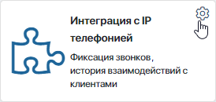
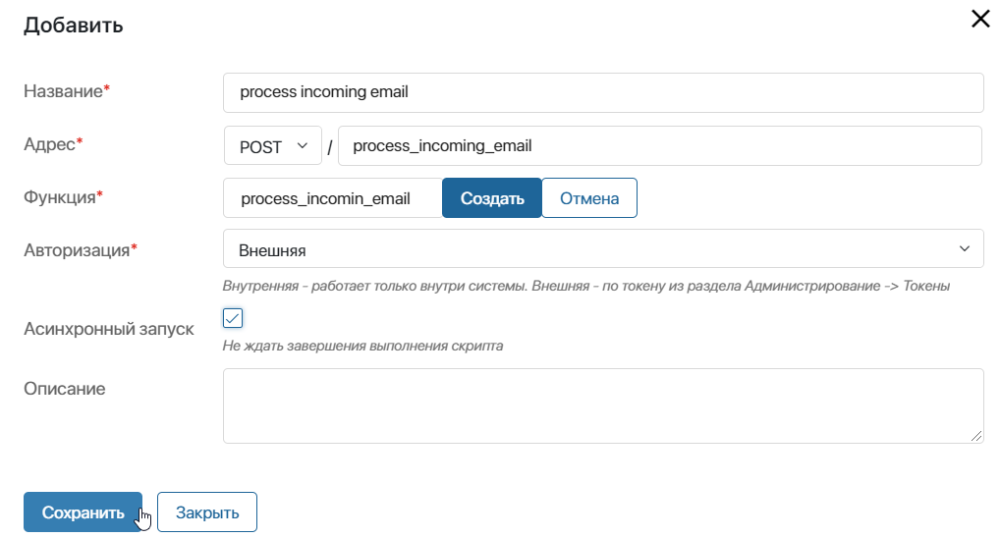
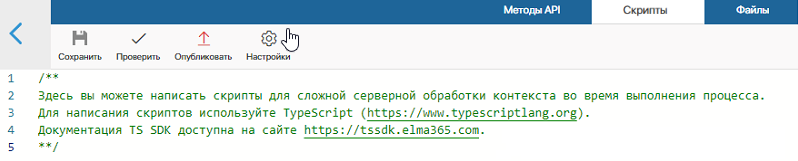
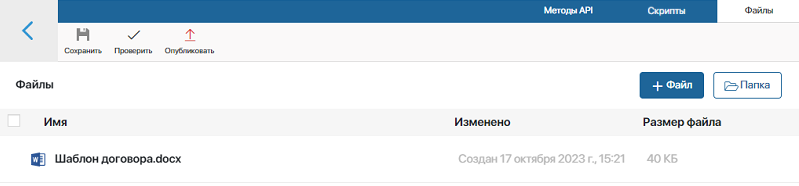
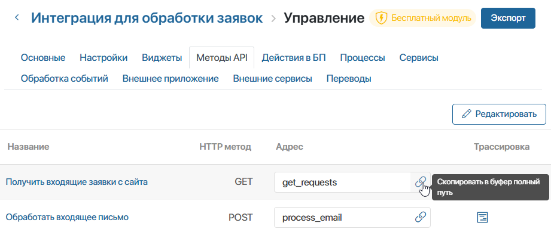

В ELMA365 авторы модулей могут создавать свои собственные методы и использовать их в web API, в скриптах виджетов, страниц и процессов или при настройке шаблона документа. Например, можно создать методы для запуска бизнес‑процесса, сложной выборки данных или организовать методы для промежуточного взаимодействия с внутренней или внешней системой.
Можно создавать функции общего назначения и использовать их повторно в разных местах.
Создание метода
Чтобы создать метод, выполните следующие действия:
- Перейдите в Администрирование > Модули.
- Наведите курсор на модуль и нажмите на появившийся значок шестерёнки.

- Перейдите на вкладку Методы API.
- Нажмите Редактировать. Откроется редактор методов.
- Нажмите кнопку + Добавить. В открывшемся окне внесите нужную информацию.

- Название* — укажите название метода;
- Адрес* — в выпадающем списке выберите один или несколько методов HTTP‑запроса. Доступны следующие методы:
GET,POST,PUT,PATCH,DELETE. Затем укажите адрес, по которому будет доступен метод API. При этом вы можете:- обозначить путь к вложенным методам — с помощью знака / задайте дочерний метод, например
main/email_dispatchилиcall_events/route/. Количество уровней вложенности неограниченно; - задать гибкий адрес для передачи значений переменных в URL метода — добавьте в конце адреса метода сочетание символов /*, например
orders/*илиorders/process/*. В скрипте метода вы сможете настроить обработку значений переменных, которые передаются при его вызове. Например, можно передавать ID пользователя, чтобы получить в результате запроса его имя и электронную почту. Подробнее о написании скрипта таких методов и их вызове читайте в статье «Настройка метода API с гибким адресом в модуле».
- обозначить путь к вложенным методам — с помощью знака / задайте дочерний метод, например
Обратите внимание, символы / и * в конце адреса не обеспечивают уникальность метода, поэтому адреса двух методов не могут отличаться только ими. Например, если вы уже добавили метод files/, при попытке создать метод files/* возникнет ошибка.
- Функция* — создайте функцию, которая будет выполняться при получении запроса;
- Авторизация — выберите тип авторизации, который будет применяться при получении запроса:
- Внутренняя авторизация — метод можно вызывать только внутри модуля, например, в других методах, виджетах, действиях в бизнес-процессах, обработчиках событий с помощью команды
Namespace.api.название_метода. Подробнее об этом мы написали ниже. Пользователь, от имени которого исполняется скрипт, должен быть авторизован в ELMA365; - Внешняя авторизация — при выборе этой опции метод будет доступен из внешней системы по токену;
- Внутренняя авторизация — метод можно вызывать только внутри модуля, например, в других методах, виджетах, действиях в бизнес-процессах, обработчиках событий с помощью команды
- Асинхронный запуск — опция позволяет не ожидать выполнение скрипта метода перед тем, как начать обработку других вызовов в модуле. В этом случае ответ на запрос приходит сразу и не содержит результатов работы метода;
- Описание — укажите подробное описание метода.
- Перейдите на вкладку Скрипты и напишите метод. Для этого используется язык программирования TypeScript. Более подробно про принципы написания скриптов в ELMA365 читайте в справке ELMA365 TS SDK.
- Сохраните и опубликуйте метод.
Доступ к глобальным константам
По умолчанию в методах API можно обращаться только к компонентам модуля, на уровне которого они настраиваются. Вы можете дополнительно получить доступ к другим объектам системы через глобальные константы. Для этого в редакторе методов перейдите на вкладку Скрипты и на верхней панели нажмите Настройки.

Вы можете использовать опции:
- Глобальные константы — установите флажок напротив опции Global, чтобы получить возможность обращаться к объектам из всех разделов системы и к глобальным параметрам. Для этого применяется константа Global;
начало внимание
При использовании константы Global для написания метода API модуль с этим методом нельзя экспортировать.
конец внимание
- Опциональные зависимости (доступны в объекте Imports) — выберите разделы или пользовательские модули и установите с ними опциональные зависимости. После этого в скриптах к ним можно обращаться через константу Imports. При использовании опциональных зависимостей модуль можно экспортировать без ограничений.
Чтобы создать зависимость, нажмите + Добавить раздел и выберите компонент системы. Затем в колонке Псевдоним задайте для него уникальное имя, которое будет использоваться в скрипте. Допустимы латинские буквы и цифры, для разделения слов можно использовать знак подчёркивания. По умолчанию используется код раздела или ID модуля.
Использование файлов в скриптах
В скриптах модуля вы можете использовать изображения, шаблоны документов, инструкции и т. д. Для этого в редакторе методов перейдите на вкладку Файлы и загрузите необходимый документ.

Откройте файл в режиме просмотра и скопируйте его идентификатор в URL-адресе страницы. С помощью идентификатора вы можете обратиться к загруженному файлу в любых скриптах модуля.
Серверные зависимости
В ELMA365 On-Premises вы можете добавлять на вкладке Файлы npm-пакеты с серверными зависимостями. Подробнее об этом читайте в статье «Серверные зависимости пакетов npm».
Трассировка методов API
Если для метода API включён сбор трейсов в разделе Администрирование > Инструменты разработчика, вы можете проанализировать выполнение его скрипта. Это позволяет оценить продолжительность отдельных запросов, оптимизировать код и выявить причины ошибок.
Чтобы изучить трейсы, в настройках модуля перейдите на вкладку Методы API. Для просмотра записей:
- по всем методам в модуле — в правом верхнем углу страницы нажмите Посмотреть трассировку;
- по определённому методу — нажмите напротив него значок .
Подробнее о настройке трассировки и информации в карточке трейса читайте в статье «Трассировка серверных скриптов».
Вызов метода API из кода скрипта
После создания метода API в модуле вы можете вызвать его в любом скрипте этого модуля. Для этого в глобальной переменной Namespace есть свойство api:
let response = await Namespace.api.some_method.call({
method: "POST",
headers: {
"X-My-CutomHeader": "Some header data"
},
query: {
"skip": "0",
"take": "10"
},
body: "Any body here"
});
В метод передаётся тип HttpApiRequest. Он расширяет тип FetchRequest, он же используется в методе fetch().
При вызове метода call() происходит веб-вызов метода API через стандартный протокол HTTP. Поэтому ответ от метода приходит в виде стандартного объекта FetchResponse.
Также для разработки модулей с вебхуками можно получить адрес метода API с помощью команды Namespace.api.some_method.getUrl(), которая вернёт строку с полным адресом этого метода для дальнейшего вызова. Этот метод бывает полезен, когда во время работы сторонний сервис требует указать обратный адрес для вызова.
Вызов метода API из сторонней системы
Метод API в модуле можно вызвать из стороннего сервиса. Для этого в веб-запросе указывается прямая ссылка на созданный метод в виде полного URL-адреса.
Чтобы получить ссылку, откройте страницу управления модулем и перейдите на вкладку Методы API. Напротив названия метода нажмите на значок копирования URL-адреса.

Если при создании метода выбрана опция внешней авторизации, в запросе используется заголовок Authorization и указывается индивидуальный токен пользователя. Подробнее об этом читайте в справке по публичному API ELMA365.
Пример вызова метода API в модуле через метод fetch():
let response = await fetch('https://abcd1234.elma365.ru/api/extensions/f1e6cf15-7c65-4be5-8443-021a280dcd80/script/upload', {
method: "POST",
headers: {
"Authorization": "Bearer " + secureToken
},
query: {
"file_id": fileId
},
body: JSON.stringify(uploadBody)
});
начало примечание
Примечание
Если в пути к методу API встречается несколько стоящих подряд символов /, они интерпретируются как один.
конец примечание
Служебные заголовки
В методах API в каждом объекте запроса, который передаётся в скрипт, содержатся заголовки, хранящие информацию о вызванном методе:
:method— http-метод;:path— часть URL‑адреса метода, которая приводится после домена, вместе с query-параметрами, например,/test1/test2?q=12345&n=aaa;:scheme— используемый в методе протокол: http или https;:authority— домен и порт (кроме 80 и 443), с которого пришёл запрос, например,elma365.ruилиlocal.elma365.dev:4200.